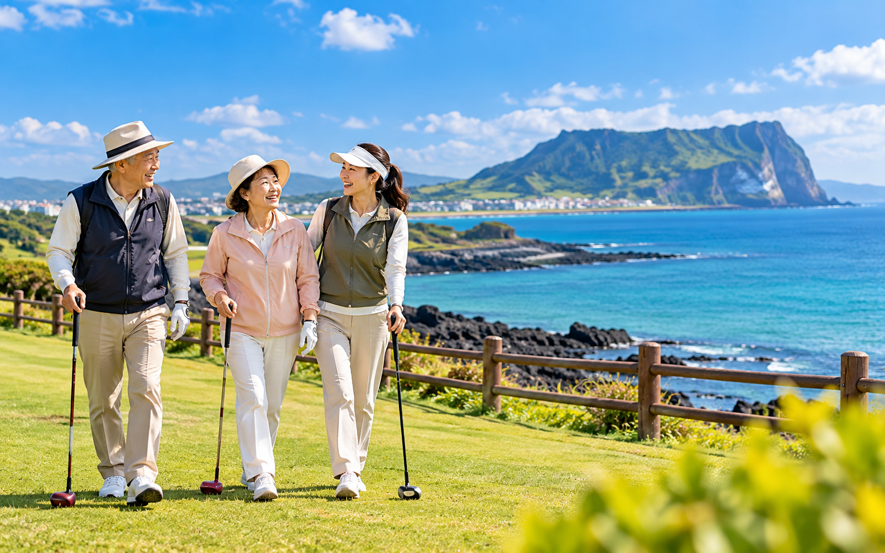
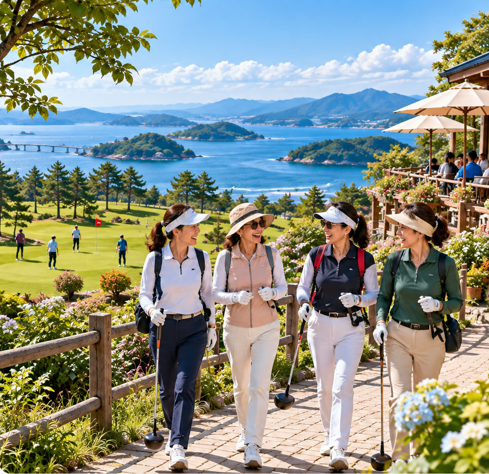
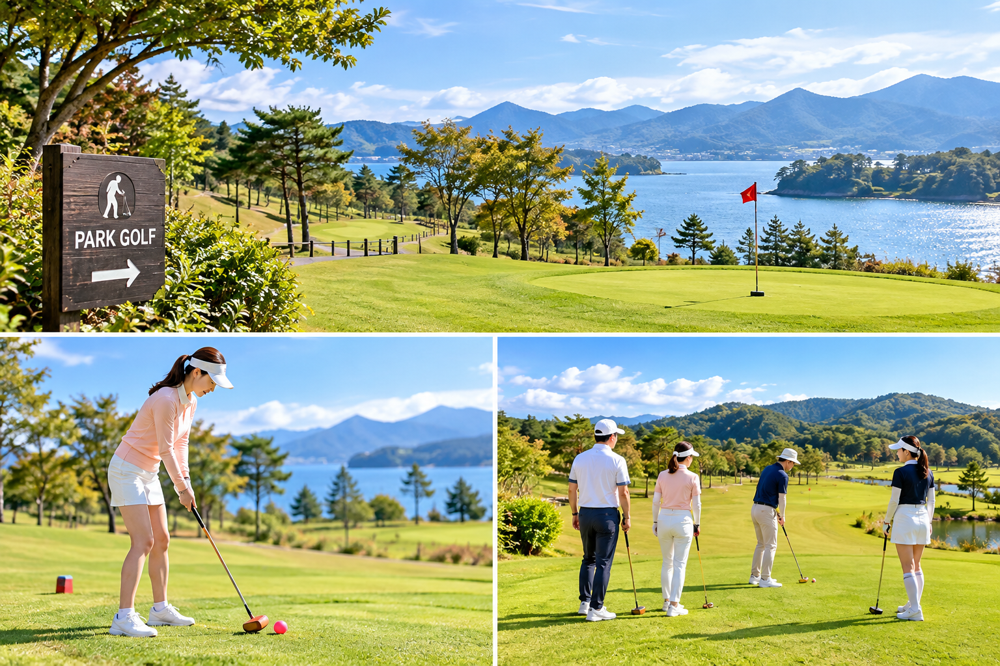
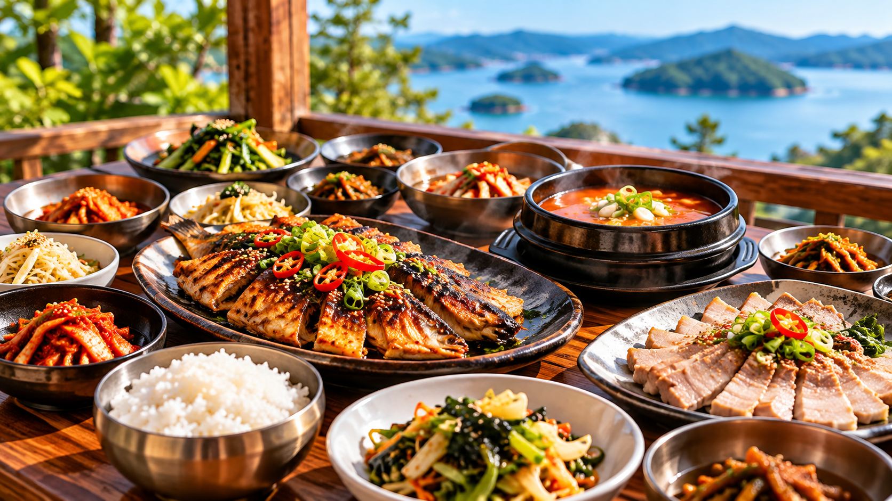
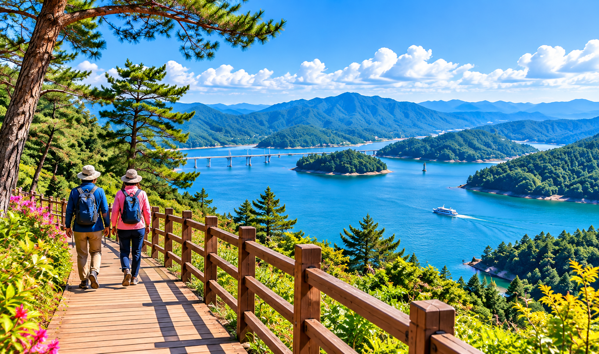

부모님과 다녀왔는데 걷는 부담이 적어 더 오래 웃으셨어요.김OO · 제주 · 60대 부모님과
파크골프, 국내여행, 맛집, 관광을 하나의 하루 일정으로 묶었습니다. 오전엔 가볍게 라운딩하고, 점심은 지역 맛집에서, 오후엔 그 고장의 풍경을 걷습니다.


채 하나, 공 하나로 시작합니다. 코스가 평탄해 처음 와도 바로 즐길 수 있어요.

라운딩 후 먹는 점심은 그 지역에서 가장 오래된 집으로 정했습니다.

바다, 숲, 들판. 코스마다 풍경이 달라 같은 지역도 다시 오게 됩니다.
많이 걷지 않아도 충분히 쉬는 일정. 숙소에서의 저녁까지 여행에 포함합니다.